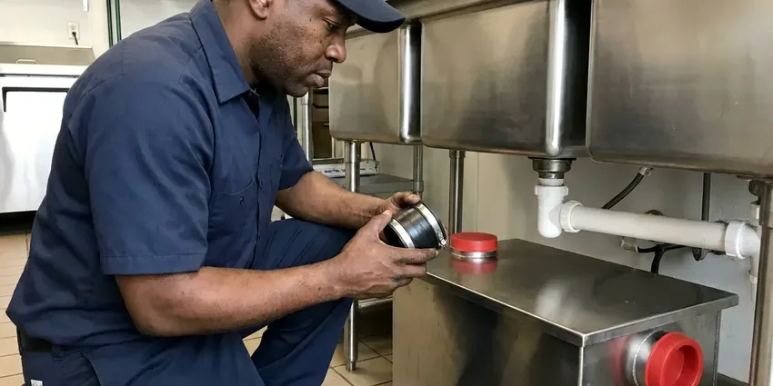

Insinkerator Installation in Redmond, OR
Get your new Insinkerator installed right the first time by JFL Plumbing in Redmond, OR. We work with all models, making sure your kitchen plumbing works the way it should.
- Prompt, Local Service
- Expert Plumbers
- Upfront Pricing
- Licensed and Insured Plumbers

Get a quieter, stronger InSinkErator installed this week in Redmond, OR.
Our plumbers carry common Badger and Evolution models on the truck so most installs finish in one visit.
Insinkerator Installation Done Right in Redmond, OR
At JFL Plumbing, we understand the importance of a properly functioning kitchen, which is why we offer top-tier Insinkerator installation services across Redmond, OR. We work with all models, ensuring your new garbage disposal fits right in with your existing plumbing.
Our expertise includes:
- Complete testing for leaks and function
- Precise electrical and plumbing connections
- Proper mounting and sealing techniques

Additional Kitchen Plumbing Services in Redmond, OR
Our kitchen plumbing services in Redmond, OR cover sinks, disposals, dishwashers, and grease traps so your kitchen stays clean, safe, and fully functional.




Grease Trap Installation near Redmond


Customers
Why Choose JFL Plumbing for Insinkerator Installation in Redmond, OR?
Our expertise in Insinkerator systems means a smooth installation process from start to finish. We make sure every detail is covered for long-term performance.
- Customer Satisfaction, Your satisfaction is our priority, and we stand by our work with solid guarantees and attentive service.
- Reliable Function, We test every new Insinkerator carefully to confirm proper operation, grind efficiency, and leak-free performance.
- Local Expertise, Our plumbers are familiar with Redmond, OR plumbing codes and typical home layouts, ensuring compliant and efficient installations.
Citywide Coverage
We install InSinkErator disposals in condos, townhomes and single-family houses throughout Redmond. Whether your kitchen has a single bowl stainless sink or a heavy composite farmhouse sink, our trucks carry the mounting hardware to handle it.
Experienced Team
Our plumbers have installed hundreds of InSinkErator units and know the quirks of each mount design. They can swap a Badger 5 in under an hour and handle tight cabinets without scratching your sink.
Safety-First Approach
We confirm the disposal circuit is grounded and that the cord kit or hardwire connection meets electrical code. Any switch or air button is installed so water can not reach live wiring.
Trusted Certified Redmond Plumbing Services Professionals
At JFL Plumbing, we take pride in providing certified plumbing services throughout Redmond, OR. Backed by recognized industry credentials, our experienced plumbers combine technical skill with genuine customer care. Whether it is repair, installation, or maintenance, we follow strict safety and quality standards to deliver lasting results you can trust.
Call Us Now PHCC Plumbing Contractor Recognition
PHCC Plumbing Contractor Recognition Better Business Bureau (BBB) Accreditation
Better Business Bureau (BBB) Accreditation Angi Certified Pro
Angi Certified Pro ISO 9001 Quality Management Certification
ISO 9001 Quality Management CertificationReliable Insinkerator Installation Services in Redmond, OR
InSinkErator Installation Cost Comparison in Redmond, OR
A basic Badger 5 install with a cord kit usually runs less than a premium Evolution Excel installation. Labor is similar for most swaps, but first-time installs cost more because of new flange work and electrical runs. We give you an upfront price that includes the unit, labor and haul-away. We also compare horsepower, sound levels and warranty length side by side. That way you can choose the model that fits your budget and cooking habits.

Disposal Replacement and Haul-Away in Redmond, OR
When an old disposal hums, leaks from the bottom or trips the reset button constantly, replacement is usually smarter than repair. We remove the failed unit, clean the old putty off the sink and install a new InSinkErator in its place. If your old mount is an InSinkErator quick-lock, we can often reuse it to save time. We haul the old unit away so you are not stuck getting rid of it. Most replacements finish in a single visit.
Standard Insinkerator Badger Series Installation in Redmond
The Insinkerator Badger series is a popular choice for many Redmond homeowners due to its reliability and affordability. Our service includes careful removal of your old unit, precise mounting of the new Badger model, secure electrical hookup, and connection to your existing drain lines. We create a watertight seal at the sink flange and test the unit thoroughly for proper function, making sure it grinds efficiently and drains correctly before we head out of your Redmond home.
Upgrading Your Insinkerator in Redmond, OR
If you're upgrading from an older, less powerful garbage disposal to a newer, more capable Insinkerator model, we can help. This service often involves removing the old unit, checking the existing plumbing and electrical for compatibility, and installing the new, more powerful disposal. We ensure the new unit fits correctly under your sink and that the drain line can handle increased output. Upgrading can greatly improve your kitchen's waste management in Redmond, OR, especially with tougher food scraps.
Insinkerator Installation for New Sink Setups in Redmond, OR
Installing an Insinkerator as part of a new kitchen sink setup in Redmond, OR requires careful coordination with other plumbing components. We work alongside your remodel schedule, ensuring the disposal is installed at the correct stage of construction. This includes precise measurement for proper alignment with the new sink drain, routing electrical lines, and connecting to the main waste line. Our goal is a clean, professional installation that fits your new kitchen's look and function.
Replacement of Existing Garbage Disposals in Redmond
If your current garbage disposal in Redmond is failing, we provide efficient replacement services, often with an Insinkerator unit. We begin by safely disconnecting and removing the old disposal, carefully cleaning the sink flange area to prepare for the new installation. Our team then installs your chosen Insinkerator model, making all necessary electrical and plumbing adjustments. We make sure the new unit integrates cleanly with your existing sink and drainage system, preventing future issues.
Dishwasher Connection and Air Gap Setup in Redmond
Most InSinkErator units have a dishwasher inlet with a factory knockout plug inside. We knock that plug out, clear the debris and connect the dishwasher drain hose with a proper clamp. We then install or verify an air gap or high loop so dirty sink water cannot siphon back into the dishwasher. Forgetting the knockout is one of the most common DIY mistakes and leads to a dishwasher that will not drain. We test both appliances together before we leave.

Badger Series Disposal Installation in Redmond
The InSinkErator Badger line is the most common replacement disposal in local kitchens. These 1/3 to 3/4 HP units handle everyday scraps and fit most standard cabinets. We install the Badger with its quick-lock mount, attach the discharge tube and connect a cord kit if your old unit was plug-in. It is a low-cost choice for rentals, starter homes and light cooking households. Most Badger installs take around an hour.
Insinkerator Installation Near Me in Redmond, OR
JFL Plumbing is your trusted local expert for Insinkerator installation throughout Redmond. We are known for fast response times and delivering high-quality workmanship right to your doorstep. For dependable plumbing services nearby, give us a call today.
If you are searching for reliable "Insinkerator installation near me" in Redmond, OR, look no further than JFL Plumbing. Our local team is strategically positioned to provide prompt and efficient service to all residents and businesses in the area. We understand the plumbing needs of Redmond homes and are prepared to handle any installation with expertise.
JFL Plumbing at a Glance
- Fully licensed plumbing team covering Redmond, OR
- 24/7 emergency service with same-day scheduling
- Upfront, flat-rate pricing before work begins
- 4.8-star rated by 657+ Oregon customers
Redmond Map
Redmond Information
- Population
- 37,009
- Area codes
- Local
- Service area
- Redmond and communities within 40 miles
- Nearby
- Bend, Springfield, Eugene, Albany
Mineral buildup and older drain lines in many homes make a properly sized and correctly mounted InSinkErator essential for avoiding scale, clogs and leaks under the sink.
Expert Services
Trust our professionals for reliable JFL Plumbing solutions in Redmond, OR.
Our Specialized Plumbing Services in Redmond, OR
At JFL Plumbing, we provide a complete range of plumbing services across Redmond, OR. From leak detection to full system installations, our team ensures fast, precise, and affordable service for both residential and commercial properties. Explore our core services below:


How Our Insinkerator Installation Process Works in Redmond, OR
At JFL Plumbing, we follow a clear, step-by-step process for every Insinkerator installation, delivering quality results for your Redmond, OR home.
Request a Quote
Call (971) 333-7694 or fill out our online form to schedule your Insinkerator installation. We'll discuss your needs, answer any questions, and provide a clear quote.
Old Unit Removal
Our technicians will arrive on time to carefully remove your existing garbage disposal, if applicable. We make sure all connections are safely disconnected and the area is prepared.
New Installation
We expertly install your new Insinkerator, connecting it to your plumbing and electrical systems. We verify all seals, mounts, and wiring are secure and up to code.
Frequently Asked Questions About Insinkerator Installation in Redmond
The cost for Insinkerator installation in Redmond, OR usually ranges from $200 to $400 for labor, not including the unit itself. This can vary based on the complexity of the installation, such as electrical modifications or new plumbing runs, and whether an old unit needs to be removed. We provide upfront pricing after reviewing your specific situation.
We install all popular Insinkerator models, including the Badger series (Badger 1, 5), the Evolution series (Essential, Compact, Excel), and other specialized units. Our plumbers are trained to handle various sizes and power levels to meet your kitchen's needs.
A straight swap typically takes about one hour. First-time installations or jobs that require new wiring or drain changes can take two to three hours.
The Badger series are entry-level, dependable disposals for basic grinding needs. The Evolution series offers advanced multi-stage grinding, quieter operation, and larger capacities, designed for tougher food waste and a quieter kitchen. Your choice depends on your usage and budget.
For light use, a Badger 5 or Badger 5XP works well. Families who cook a lot or want a quieter unit should consider an Evolution Compact or Excel. Homes on septic should consider the Evolution Septic Assist.
Yes, we understand that a broken garbage disposal can be a major inconvenience. We offer emergency Insinkerator installation services in Redmond, OR to quickly replace a failed unit. Just call us, and we'll send a plumber as soon as possible to restore your kitchen's function.
Yes, but hard water can scale grind components and drain lines over time. Running cold water during use and periodic cleaning help, and stainless grind parts on higher-end models last longer.
In most cases, a simple like-for-like replacement of a garbage disposal does not require a permit in Redmond. However, if new electrical circuits are being installed or significant plumbing alterations are made, a permit may be required. We will advise you if your specific installation requires one.
What People Are Saying About Our Plumbing Experts?

James P.
Our commercial plumbing system had a leak under the sink, and JFL Plumbing handled it professionally. The plumbers arrived quickly and restored everything without disruption to our customers.
Commercial Plumbing · Oregon City, OR
Patricia H.
We had a slab leak that two other companies could not find. JFL Plumbing located it in under an hour, explained our options, and the price matched the quote to the dollar.
Slab Leak Repair · Springfield, ORRobert G.
The trenchless sewer replacement saved our front yard. They walked us through the camera inspection footage first so we knew exactly what we were paying for.
Sewer Line Replacement · Eugene, OR
Emily R.
I called JFL Plumbing for plumbing repair, and the technician was fast, polite, and thorough. They explained the problem clearly and fixed it the same day. I will definitely hire them again. Highly recommended!
Plumbing Repair · Redmond, OR
Mark T.
When our office needed drain cleaning, JFL Plumbing provided quick, reliable service. The plumber arrived on time and made sure every drain flowed perfectly before leaving. Very satisfied.
Drain Cleaning · Albany, OR
Daniel K.
A pipe burst at 11 pm and they actually answered. The plumber showed up within the hour, shut everything down, and had us back to normal the next morning. Could not ask for more.
Emergency Plumbing · Eugene, OR